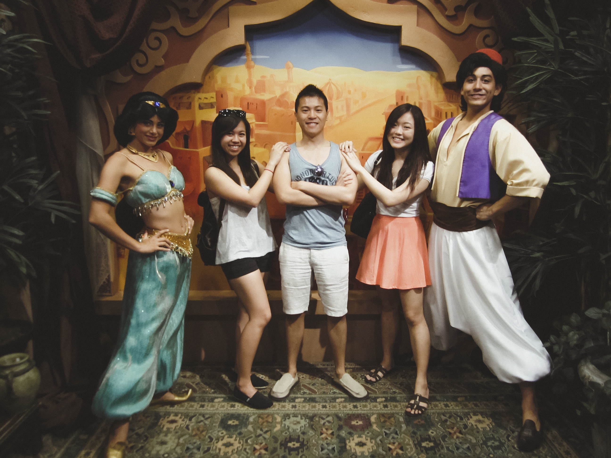

Orlando 2013
Orlando 2013 was the first trip I went on with friends. Jenny, Matthew, and I decided to head to Orlando to hit up the theme parks for our graduation trip. Having been to Disneyworld in December of 2012, I was still very familiar with the Disney parks and was ecstatic to head back for a second time.
Having just paid off our student debt, we knew that this was going to be a budget trip. We chose a time of year that was off-season, chose the most inexpensive hotel, decided to order our own groceries(which was quite an experience), and decided on the most budget friendly travel options. All in all, I think we did fairly well at just around a grand per person.
Disneyworld in the spring/summer was an entirely new experience. That, along with being with two of my closest friends, made it a very memorable graduation trip.
